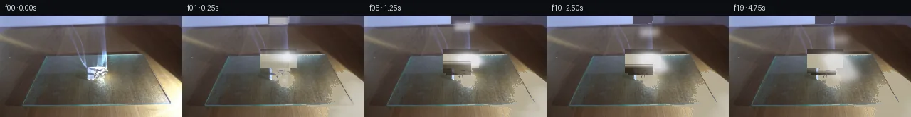

![首帧]()

Round 00
2026-11-06T05:17:33.752636+00:00像素候选变化代码 +214/−0inspection 更新
pixels e150a725e561c45f · code 731546f0ca121444
查看本轮 generate.py 真实 diff
--- previous/generate.py
+++ current/generate.py
@@ -0,0 +1,214 @@
+"""PixelWorld-Text generation for Case 0140.
+Burning folded paper on glass cutting board with white smoke.
+Method: Static background extraction + smoke advection + flame flicker + paper erosion.
+"""
+import numpy as np
+from PIL import Image
+from scipy.ndimage import gaussian_filter, map_coordinates
+import os, sys
+
+# ── Load first frame ──────────────────────────────────────────────
+frame0 = np.array(Image.open("first_frame.png")).astype(np.float32)
+H, W = 144, 256
+
+# ── Estimate static background (everything except transient flame/smoke) ──
+# The background behind smoke/flame is estimated from surrounding clean regions.
+bg = frame0.copy()
+
+# Right-side wall background: average of top-right clean pixels
+wall_right = frame0[0:14, 145:256].mean(axis=(0, 1))
+# Dark counter area behind smoke:
+counter_dark = frame0[50:55, 145:256].mean(axis=(0, 1))
+# Glass-cutting-board area below flame (counter color):
+glass_area = frame0[100:144, 150:256].mean(axis=(0, 1))
+
+# Fill background estimate behind smoke region
+for r in range(H):
+ for c in range(W):
+ # Smoke region: where smoke exists in frame0
+ bright = frame0[r, c].mean()
+ is_smoke = (r < 75 and c > 120 and bright > 140) or \
+ (r >= 75 and r < 130 and c > 125 and bright > 140) or \
+ (r >= 80 and c > 145 and bright > 180)
+ if is_smoke or (r >= 48 and r <= 74 and c >= 105 and c <= 160):
+ # Estimate background based on location
+ if r < 15:
+ bg[r, c] = wall_right
+ elif r < 55:
+ bg[r, c] = counter_dark
+ else:
+ bg[r, c] = glass_area
+
+# ── Define regions ────────────────────────────────────────────────
+FLAME_ROWS = slice(46, 76)
+FLAME_COLS = slice(100, 162)
+SMOKE_ROWS = slice(0, 144)
+SMOKE_COLS = slice(115, 256)
+PAPER_ROWS = slice(58, 80)
+PAPER_COLS = slice(110, 150)
+
+# ── Initialize smoke density layer ────────────────────────────────
+# Smoke density: 0=no smoke, 1=full white smoke
+smoke_density = np.zeros((H, W), dtype=np.float32)
+
+# Where smoke is visible in frame0, assign density based on brightness above background
+smoke_mask = np.zeros((H, W), dtype=bool)
+for r in range(H):
+ for c in range(W):
+ b = frame0[r, c].mean()
+ bg_b = bg[r, c].mean()
+ if b > bg_b + 25:
+ smoke_density[r, c] = np.clip((b - bg_b) / 180.0, 0.0, 1.0)
+ if smoke_density[r, c] > 0.05:
+ smoke_mask[r, c] = True
+
+# ── Flame parameters ──────────────────────────────────────────────
+rng = np.random.RandomState(42)
+flame_mask = np.zeros((H, W), dtype=np.float32)
+flame_mask[FLAME_ROWS, FLAME_COLS] = 1.0
+# Create a soft flame mask (Gaussian falloff from flame center)
+Y, X = np.meshgrid(np.arange(H, dtype=np.float64), np.arange(W, dtype=np.float64), indexing='ij')
+flame_cy, flame_cx = 57.0, 145.0
+flame_soft = np.exp(-((X - flame_cx)**2 / (2*20**2) + (Y - flame_cy)**2 / (2*8**2)))
+
+# ── Generate frames ───────────────────────────────────────────────
+frames = []
+frames.append(frame0.clip(0, 255).astype(np.uint8))
+
+for t in range(1, 20):
+ progress = t / 19.0 # 0→1 over the sequence
+
+ # Start from the static background
+ cur = bg.copy()
+
+ # ── Paper burning away ────────────────────────────────────────
+ # Paper recedes upward as it burns
+ paper_top = int(62 + progress * 15) # moves from row 62 to 77
+ paper_brightness = 1.0 - progress * 0.8
… diff truncated; 127 more lines …